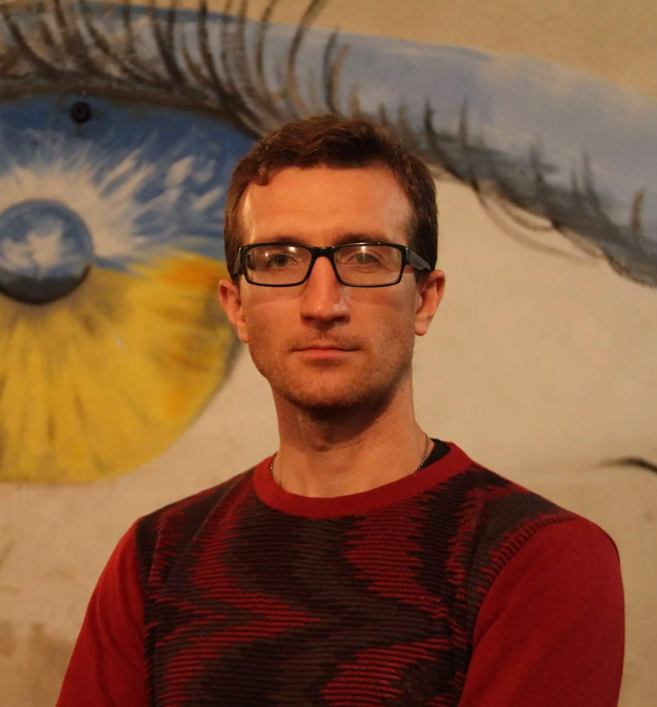
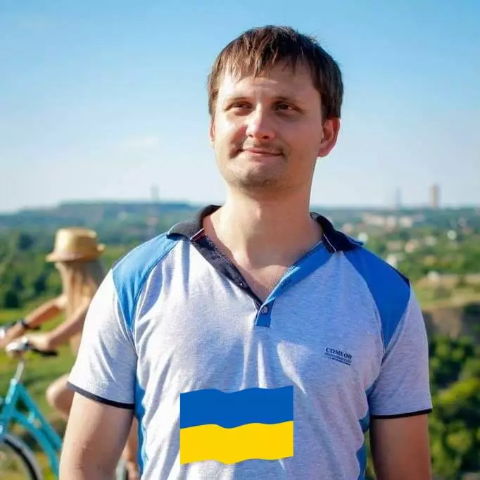

Наразі арт-простір «Бомбік» не працює, нові заходи не відбуваються.
Про арт-простір «Бомбік»
Арт-простір «Бомбік» — волонтерське об’єднання небайдужих людей у Кривому Розі. У бомбосховищі в Покровському районі ми проводили вистави, концерти, поетичні вечори й дитячі заходи, а зібрані донати передавали на потреби ЗСУ. Ми не тільки шахтарське, а й творче місто!

Павло Осіков
Актор, поет, режисер і сценарист, засновник двох театральних проєктів: Театру одного актора «AVE» та екстрим-театру «ШУМ». А ще волонтер за сумісництвом.
Шукаючи приміщення, де під час вистав глядачі будуть у більшій безпеці, Павло натрапив на «Бомбік». Згодом організатори перетворили це бомбосховище на арт-простір, і воно стало постійним майданчиком для мистецтва, музики, театру та культурних заходів.

Денис Чигірьов
Організатор та ідейний натхненник арт-простору «Бомбік». Волонтер, голова ОСББ, батько двох чудових дітей і добрий чоловік своєї дружини.
Займатися волонтерством для ЗСУ я почав відразу з початку війни. Допомога переселенцям, волонтерам та різним фондам не давала відчуття, що я роблю все, що можу, для нашої перемоги. Чогось не вистачало, усіх цих зусиль було замало. Тож я шукав варіанти збільшити допомогу ЗСУ.
Я давно планував зробити місце для культурного відпочинку. Подавав проєкт на облаштування арт-простору в нашому парку «Шахтарський», але не пройшов за конкурсом. Уже після початку війни мені подзвонив товариш, відомий у нашому місті як актор, який дає класні вистави, Павло Осіков, і запитав, чи немає в мене якогось приміщення, де він міг би проводити свої заходи. Перебравши декілька варіантів, згадав, що в однієї дуже активної голови ОСББ, Світлани Остапчук, є у віданні бомбосховище! А це ідея! Дуже класно і креативно! Сказано — зроблено! Світлана підтримала, Павлу сподобалася ця ідея, і після деяких приготувань було проведено першу виставу! А далі — підняв свої творчі контакти і вперед!
Світлана Остапчук
Голова ОСББ, господиня бомбосховища та співзасновниця арт-простору. Саме вона підтримала ідею проводити в укритті творчі вечори. Завдяки Світлані в «Бомбіку» панував домашній затишок, а гостей чекав запашний чай.
Цілі арт-простору
- збір коштів на потреби ЗСУ;
- підтримання морально-психологічного стану мешканців міста та переселенців;
- підтримання зв’язку між творчими людьми й глядачами;
- безпечне проведення культурних заходів.
Що було зроблено в «Бомбіку» для проведення заходів
- налагодили зв’язки з творчими особистостями;
- розвісили авторські картини криворізького художника Сергія Арещенка;
- створили інсталяцію з фотографіями криворізького фотохудожника Анатолія Новака;
- Андрій Калінкін написав мурал;
- привезли стільці та столи;
- зробили освітлення входу до арт-простору;
- зробили освітлення залів «Бомбіка»;
- встановили сцену.
Про нас розповідали
- «Робимо театр з бомбосховищ» — арт-простір «Бомбік» у Кривому Розі, відео каналу «Театральна риболовля»;
- Мистецтво слова й війна: інтерв’ю з Павлом Осіковим, krivbass.city;
- Андрій Богун про театр і бомбосховища, «Український Південь».